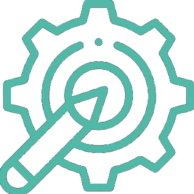

Welcome to the Wrexham Counselling Page
The site will be getting periodically updated before the start of the academic year 2026/27 with additional content and features.
This site provides technical expertise, and resources to students and staff in the Counselling Department at Wrexham University. More specifically, we provide technical advice to students, academics, and external clients for feasibility of projects and choosing appropriate equipment or methods to prevent bad study designs, unsafe setups, or unrealistic proposals before they happen.
Resources & Platforms
Access training materials, SOPs, and tutorials on tools/platforms such as SPSS, R, Gorilla, JISC and PsychoPy.

PsychTech Support
Meet the technicians, book time with us, and discover how we can help with your dissertation project Click here to book a meeting with us.
Recruitment & Faculty Research
Discover current research opportunities and see how you can take part in active studies across our department. Explore our recruitment page to find studies that interest you in participating and getting involved.
Student Guides
The technicians have created guides to help students complete Risk Assessments, submit Online Ethics applications, and explore case studies showcasing the lab’s capabilities.
Explore Our Site
To find what you need, please visit the sections above:
About – learn more about our role and expertise
Students - discover some helpful guides and documents as a student
Resources - access open-source and academic tools
Recruitment A page to host our internal and external available studies page.
Platforms- All the main platforms the psychology department use for teaching and research.
News - get the latest news on training and short courses provided by the department
Contact – get in touch with the Psychology Technicians team
Counselling Staff
To find the rest of the counselling staff, please see our full staff page on the main Wrexham University website.
Wrexham University Widget
Use the Wrexham University Logo Widget on the bottom right of the page to access quick links to several external websites that you are very likely to use during your time at Wrexham University!
Specifically,
- Gorilla.sc
- JISC
- Wrexham IT Support
- PsychTech Booking System
- Wrexham Digital Skills
- OSF
- Moodle
- British Association For Counselling and Psychotherapy